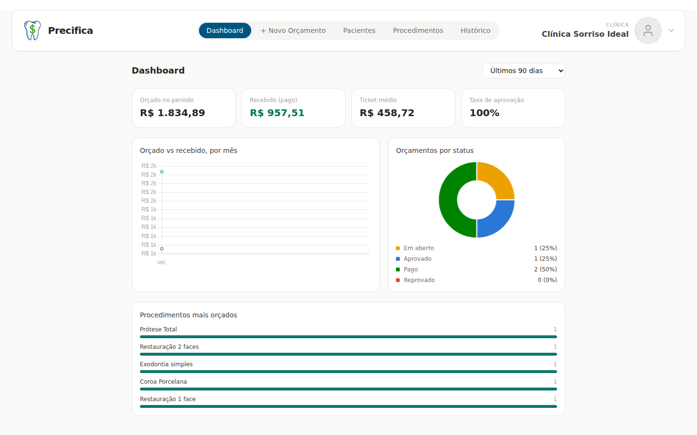

Pare de precificar
no achismo.
O Precifica calcula o custo real de cada procedimento — material, hora clínica, taxa de cartão e imposto — e mostra o preço certo antes de você abrir a boca com o paciente.
7 dias grátis, sem compromisso de permanência · cancele quando quiser

O problema
Toda clínica sente isso em algum momento
Preço no "achismo"
Cobrar um valor só porque "sempre foi assim" ou porque ouviu falar de outro consultório — sem saber se aquilo cobre o custo de verdade.
Planilha solta por fora
Uma planilha aqui, uma anotação no papel ali, um cálculo de cabeça na hora da consulta — nada conversa entre si.
Sem saber se cobre o custo
No fim do mês, a dúvida: esse procedimento deu lucro ou só pagou o material e a hora clínica?
O coração do sistema
Monta o orçamento e já mostra o valor a cobrar
Busca o paciente — os dados de contato já preenchem sozinhos, se ele já estiver cadastrado — adiciona os procedimentos e escolhe a forma de pagamento. O Precifica já calcula o valor final na hora, considerando taxa de cartão, imposto e a margem de lucro configurada.
- Resumo financeiro (custo, hora clínica, taxa, imposto) visível só para você conferir antes de apresentar o valor
- Salva, exporta ou apresenta direto na tela para o paciente, sem planilha por fora


Plano de tratamento personalizado
Um plano de tratamento com a cara da sua clínica, não com a do sistema
Muitos sistemas entregam um orçamento genérico, com a marca deles no topo. No Precifica, o orçamento sai como um plano de tratamento completo: com o seu logo, o seu nome e o CRO, uma marca d'água da sua identidade, saudação ao paciente pelo nome, data e validade do plano, procedimentos numerados, valor total, forma de pagamento e rodapé com endereço, telefone e Instagram. O paciente recebe um documento que passa a imagem de uma clínica de grande porte, e não uma lista de preços
- Seus dados configurados uma vez e aplicados em todo orçamento, sem redigitar
- Exporte em PDF, imagem ou envie direto pelo WhatsApp
- Valor de cada forma de pagamento visível ao lado dela, com opção de dividir o pagamento

Precificação
Já vem com uma base pronta de procedimentos
Dezenas de procedimentos já cadastrados, organizados por categoria — Prótese, Clínico, Endodontia, Estética, Ortodontia — com valores de referência de mercado. Você não começa do zero: ajusta o que já existe para a sua realidade.
Para cada procedimento: custo do material, margem de lucro desejada, duração, número de sessões — e o Precifica calcula sozinho o preço final e o custo total, já considerando o valor da sua hora clínica.
O maior diferencial
De onde vem cada centavo do preço
Cadastre o material com o preço da embalagem — "esse tubo de resina custa X e rende Y gramas" — e vincule a quantidade usada em cada procedimento. O Precifica calcula o custo exato daquele uso, sozinho.
Em vez de chutar "esse procedimento me custa mais ou menos R$ 30 de material", você vê o valor exato, baseado no que realmente se gasta — e isso já vira o custo do procedimento automaticamente.

Como funciona
Do zero ao orçamento fechado, em 3 passos
Configure uma vez
Custos fixos, pró-labore e horas produtivas geram o custo da sua hora clínica. Mais imposto e taxas de pagamento — tudo entra sozinho em todo procedimento, dali em diante.
Ajuste procedimentos e materiais
Parta da base já pronta, ou cadastre os seus. Vincule os materiais usados em cada um e deixe o sistema calcular o custo real.
Monte orçamentos com o preço certo
Escolha os procedimentos e a forma de pagamento — o valor final já aparece calculado, pronto para apresentar ao paciente.
Planos
Comece com 7 dias grátis
Sem letra miúda. Cancele quando quiser, direto no painel de "Gerenciar assinatura".
Plano único
Tudo do Precifica, sem pegadinha
- Orçamentos ilimitados
- Procedimentos, materiais e pacientes ilimitados
- Cancele quando quiser
Serviço opcional
Não tem tempo de cadastrar tudo sozinho?
Oferecemos um serviço de consultoria independente para quem prefere entregar essa parte para alguém: um especialista cadastra e atualiza seus materiais — marca, quantidade usada, custo da embalagem — e vincula tudo aos seus procedimentos, com o preço final já batendo com o custo real da sua clínica.
- Cadastro e atualização de materiais com marca, quantidade e preço
- Cálculo do custo real por procedimento, vinculado aos materiais certos
- Revisão periódica conforme o preço dos seus fornecedores muda
Serviço sob consulta
O valor da consultoria varia conforme o tamanho da tabela de procedimentos e a quantidade de materiais a cadastrar. Fale com a gente para receber uma proposta.
Dúvidas frequentes
Perguntas de quem está decidindo
Da configuração ao orçamento fechado, sem planilha nenhuma por fora.
Experimente o Precifica por 7 dias e veja o preço de cada procedimento bater com o custo real do seu consultório.
Começar teste grátis